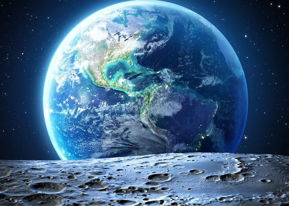

Earth: Our Blue Marble
Earth, the third planet from the Sun, is the only known planet to harbor life. Its unique combination of factors, including liquid water, a breathable atmosphere, and a suitable distance from the Sun, has created conditions conducive to life.
Earth is a terrestrial planet with a solid, rocky surface. Approximately 71% of its surface is covered by oceans, which play a crucial role in regulating the planet's climate. The remaining 29% is land, consisting of continents and islands.
Earth's atmosphere is composed primarily of nitrogen and oxygen, with trace amounts of other gases. It protects the planet from harmful solar radiation and helps to maintain a stable temperature. The Earth's magnetic field also shields it from charged particles from the Sun.
Life on Earth is incredibly diverse, ranging from microscopic bacteria to complex organisms like humans. The planet's biodiversity is essential for maintaining ecosystem health and supporting human life.
Earth is the third planet from the Sun and the only astronomical object known to harbor life. This is enabled by Earth being an ocean world, the only one in the Solar System sustaining liquid surface water. Almost all of Earth's water is contained in its global ocean, covering 70.8% of Earth's crust. The remaining 29.2% of Earth's crust is land, most of which is located in the form of continental landmasses within Earth's land hemisphere. Most of Earth's land is somewhat humid and covered by vegetation, while large sheets of ice at Earth's polar deserts retain more water than Earth's groundwater, lakes, rivers and atmospheric water combined. Earth's crust consists of slowly moving tectonic plates, which interact to produce mountain ranges, volcanoes, and earthquakes. Earth has a liquid outer core that generates a magnetosphere capable of deflecting most of the destructive solar winds and cosmic radiation.
Earth has a dynamic atmosphere, which sustains Earth's surface conditions and protects it from most meteoroids and UV-light at entry. It has a composition of primarily nitrogen and oxygen. Water vapor is widely present in the atmosphere, forming clouds that cover most of the planet. The water vapor acts as a greenhouse gas and, together with other greenhouse gases in the atmosphere, particularly carbon dioxide (CO2), creates the conditions for both liquid surface water and water vapor to persist via the capturing of energy from the Sun's light. This process maintains the current average surface temperature of 14.76 °C (58.57 °F), at which water is liquid under normal atmospheric pressure. Differences in the amount of captured energy between geographic regions (as with the equatorial region receiving more sunlight than the polar regions) drive atmospheric and ocean currents, producing a global climate system with different climate regions, and a range of weather phenomena such as precipitation, allowing components such as nitrogen to cycle.

Earth is rounded into an ellipsoid with a circumference of about 40,000 km. It is the densest planet in the Solar System. Of the four rocky planets, it is the largest and most massive. Earth is about eight light-minutes away from the Sun and orbits it, taking a year (about 365.25 days) to complete one revolution. Earth rotates around its own axis in slightly less than a day (in about 23 hours and 56 minutes). Earth's axis of rotation is tilted with respect to the perpendicular to its orbital plane around the Sun, producing seasons. Earth is orbited by one permanent natural satellite, the Moon, which orbits Earth at 384,400 km (1.28 light seconds) and is roughly a quarter as wide as Earth. The Moon's gravity helps stabilize Earth's axis, causes tides and gradually slows Earth's rotation. Tidal locking has made the Moon always face Earth with the same side.
Earth, like most other bodies in the Solar System, formed 4.5 billion years ago from gas and dust in the early Solar System. During the first billion years of Earth's history, the ocean formed and then life developed within it. Life spread globally and has been altering Earth's atmosphere and surface, leading to the Great Oxidation Event two billion years ago. Humans emerged 300,000 years ago in Africa and have spread across every continent on Earth. Humans depend on Earth's biosphere and natural resources for their survival, but have increasingly impacted the planet's environment. Humanity's current impact on Earth's climate and biosphere is unsustainable, threatening the livelihood of humans and many other forms of life, and causing widespread extinctions.[23]
Main articles: History of Earth and Timeline of natural history Formation
Further information: Early Earth and Hadean
A 2012 artistic impression of the early Solar System's protoplanetary disk from which Earth and other Solar System bodies were formed
The oldest material found in the Solar System is dated to 4.5682+0.0002
−0.0004 Ga (billion years) ago.[35] By 4.54±0.04 Ga the primordial Earth had formed.[36] The bodies in the Solar System formed and evolved with the Sun. In theory, a solar nebula partitions a volume out of a molecular cloud by gravitational collapse, which begins to spin and flatten into a circumstellar disk, and then the planets grow out of that disk with the Sun. A nebula contains gas, ice grains, and dust (including primordial nuclides). According to nebular theory, planetesimals formed by accretion, with the primordial Earth being estimated as likely taking anywhere from 70 to 100 million years to form.[37]
Estimates of the age of the Moon range from 4.5 Ga to significantly younger.[38] A leading hypothesis is that it was formed by accretion from material loosed from Earth after a Mars-sized object with about 10% of Earth's mass, named Theia, collided with Earth.[39] It hit Earth with a glancing blow and some of its mass merged with Earth.[40][41] Between approximately 4.1 and 3.8 Ga, numerous asteroid impacts during the Late Heavy Bombardment caused significant changes to the greater surface environment of the Moon and, by inference, to that of Earth.[42]
After formation
Main article: Geological history of Earth
Earth's atmosphere and oceans were formed by volcanic activity and outgassing.[43] Water vapor from these sources condensed into the oceans, augmented by water and ice from asteroids, protoplanets, and comets.[44] Sufficient water to fill the oceans may have been on Earth since it formed.[45] In this model, atmospheric greenhouse gases kept the oceans from freezing when the newly forming Sun had only 70% of its current luminosity.[46] By 3.5 Ga, Earth's magnetic field was established, which helped prevent the atmosphere from being stripped away by the solar wind.[47]
Pale orange dot, an artist's impression of Early Earth, featuring its tinted orange methane-rich early atmosphere[48]
As the molten outer layer of Earth cooled it formed the first solid crust, which is thought to have been mafic in composition. The first continental crust, which was more felsic in composition, formed by the partial melting of this mafic crust.[49] The presence of grains of the mineral zircon of Hadean age in Eoarchean sedimentary rocks suggests that at least some felsic crust existed as early as 4.4 Ga, only 140 Ma after Earth's formation.[50] There are two main models of how this initial small volume of continental crust evolved to reach its current abundance:[51] (1) a relatively steady growth up to the present day,[52] which is supported by the radiometric dating of continental crust globally and (2) an initial rapid growth in the volume of continental crust during the Archean, forming the bulk of the continental crust that now exists,[53][54] which is supported by isotopic evidence from hafnium in zircons and neodymium in sedimentary rocks. The two models and the data that support them can be reconciled by large-scale recycling of the continental crust, particularly during the early stages of Earth's history.[55]
New continental crust forms as a result of plate tectonics, a process ultimately driven by the continuous loss of heat from Earth's interior. Over the period of hundreds of millions of years, tectonic forces have caused areas of continental crust to group together to form supercontinents that have subsequently broken apart. At approximately 750 Ma, one of the earliest known supercontinents, Rodinia, began to break apart. The continents later recombined to form Pannotia at 600–540 Ma, then finally Pangaea, which also began to break apart at 180 Ma.[56]
The most recent pattern of ice ages began about 40 Ma,[57] and then intensified during the Pleistocene about 3 Ma.[58] High- and middle-latitude regions have since undergone repeated cycles of glaciation and thaw, repeating about every 21,000, 41,000 and 100,000 years.[59] The Last Glacial Period, colloquially called the "last ice age", covered large parts of the continents, to the middle latitudes, in ice and ended about 11,700 years ago.[60]
Origin of life and evolution
Main articles: Origin of life, Earliest known life forms, and History of life
Chemical reactions led to the first self-replicating molecules about four billion years ago. A half billion years later, the last common ancestor of all current life arose.[61] The evolution of photosynthesis allowed the Sun's energy to be harvested directly by life forms. The resultant molecular oxygen (O2) accumulated in the atmosphere and due to interaction with ultraviolet solar radiation, formed a protective ozone layer (O3) in the upper atmosphere.[62] The incorporation of smaller cells within larger ones resulted in the development of complex cells called eukaryotes.[63] True multicellular organisms formed as cells within colonies became increasingly specialized. Aided by the absorption of harmful ultraviolet radiation by the ozone layer, life colonized Earth's surface.[64] Among the earliest fossil evidence for life is microbial mat fossils found in 3.48 billion-year-old sandstone in Western Australia,[65] biogenic graphite found in 3.7 billion-year-old metasedimentary rocks in Western Greenland,[66] and remains of biotic material found in 4.1 billion-year-old rocks in Western Australia.[67][68] The earliest direct evidence of life on Earth is contained in 3.45 billion-year-old Australian rocks showing fossils of microorganisms.[69][70]
An artist's impression of the Archean, the eon after Earth's formation, featuring round stromatolites, which are early oxygen-producing forms of life from billions of years ago. After the Late Heavy Bombardment, Earth's crust had cooled, its water-rich barren surface is marked by continents and volcanoes, with the Moon still orbiting Earth half as far as it is today, appearing 2.8 times larger and producing strong tides.[71]
During the Neoproterozoic, 1000 to 539 Ma, much of Earth might have been covered in ice. This hypothesis has been termed "Snowball Earth", and it is of particular interest because it preceded the Cambrian explosion, when multicellular life forms significantly increased in complexity.[72][73] Following the Cambrian explosion, 535 Ma, there have been at least five major mass extinctions and many minor ones.[74] Apart from the proposed current Holocene extinction event, the most recent was 66 Ma, when an asteroid impact triggered the extinction of non-avian dinosaurs and other large reptiles, but largely spared small animals such as insects, mammals, lizards and birds. Mammalian life has diversified over the past 66 Mys, and several million years ago, an African ape species gained the ability to stand upright.[75][76] This facilitated tool use and encouraged communication that provided the nutrition and stimulation needed for a larger brain, which led to the evolution of humans. The development of agriculture, and then civilization, led to humans having an influence on Earth and the nature and quantity of other life forms that continues to this day.[77]
Future
Main article: Future of Earth
See also: Global catastrophic risk
A dark gray and red sphere representing the Earth lies against a black background to the right of an orange circular object representing the Sun
Conjectured illustration of the scorched Earth after the Sun has entered the red giant phase, about 5–7 billion years from now
Earth's expected long-term future is tied to that of the Sun. Over the next 1.1 billion years, solar luminosity will increase by 10%, and over the next 3.5 billion years by 40%.[78] Earth's increasing surface temperature will accelerate the inorganic carbon cycle, possibly reducing CO2 concentration to levels lethally low for current plants (10 ppm for C4 photosynthesis) in approximately 100–900 million years.[79][80] A lack of vegetation would result in the loss of oxygen in the atmosphere, making current animal life impossible.[81] Due to the increased luminosity, Earth's mean temperature may reach 100 °C (212 °F) in 1.5 billion years, and all ocean water will evaporate and be lost to space, which may trigger a runaway greenhouse effect, within an estimated 1.6 to 3 billion years.[82] Even if the Sun were stable, a fraction of the water in the modern oceans will descend to the mantle, due to reduced steam venting from mid-ocean ridges.[82][83]
The Sun will evolve to become a red giant in about 5 billion years. Models predict that the Sun will expand to roughly 1 AU (150 million km; 93 million mi), about 250 times its present radius.[78][84] Earth's fate is less clear. As a red giant, the Sun will lose roughly 30% of its mass, so, without tidal effects, Earth will move to an orbit 1.7 AU (250 million km; 160 million mi) from the Sun when the star reaches its maximum radius, otherwise, with tidal effects, it may enter the Sun's atmosphere and be vaporized.[78]